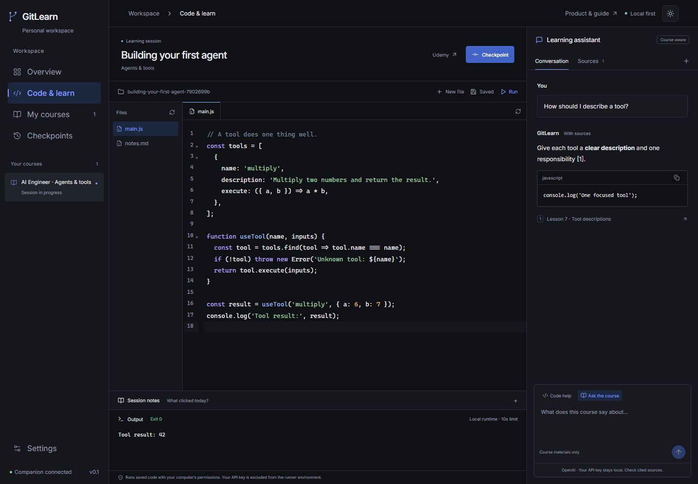

Watch with context.
The browser extension brings your Udemy course and current lesson into GitLearn. No juggling course names, folders, and scattered tabs.
UDEMY / CURRENT LESSONBuilding your first agent Connected to your workspace
THE WORKSPACE FOR SELF-TAUGHT DEVELOPERS
Watch on Udemy. Build in GitLearn.
Your courses, code, and
sourced AI help in one workspace that lives on your computer.
Windows preview · Udemy first · GitHub optional

The actual GitLearn interface. Example course and assistant conversation shown.
LEARNING IS IN THE DOING
Following along is a start. Understanding comes from trying it yourself, getting unstuck, and picking up where you left off. GitLearn gives that work a home.
The browser extension brings your Udemy course and current lesson into GitLearn. No juggling course names, folders, and scattered tabs.
Write real files in the local editor. Run JavaScript or Python, preview a single HTML page, and ask for help grounded in your own code.
// Try it. Change it. Understand it. const lesson = "Your next idea"; console.log(lesson);
Save notes with a reviewed Git checkpoint. Course by course, build a history of what you made. Connect one private GitHub repository when you’re ready.
HELP THAT KNOWS WHAT YOU’RE LEARNING
Ask about your code, or ask the course. GitLearn retrieves relevant passages from your local learning library and shows the sources behind the answer.
Add transcripts you can see or material you have permission to use. GitLearn doesn’t download course videos. AI requires your own OpenAI API key.
Why does my loop stop after one tool call?
Return the tool result to the conversation, then let the model choose the next step. Your function currently returns immediately after the first call.
# Keep the conversation going messages.append(tool_result) continue
What makes an agent different from one prompt?
An agent repeats a loop: decide, use a tool, read the result, and decide again. The lesson’s example keeps going until the task is complete. [1]
The real assistant opens each cited passage so you can check the explanation against your course.
YOUR COMPUTER. YOUR LEARNING.
Local by default. One optional GitHub repository.
FROM DOWNLOAD TO FIRST CHECKPOINT
A guided setup inside the app takes care of the starting point. Here’s the whole journey.
Download the Windows installer below. Install Git for Windows if needed. JavaScript’s runtime comes with the app; install Python only for Python lessons.
Open the app and follow setup. Use a parent folder such as Desktop / My Learning. GitLearn creates history and practice folders inside it and organizes each course automatically.
Add your OpenAI API key during setup or later in settings. The desktop app encrypts it with Windows. Local coding and checkpoints work without a key.
Until the Chrome store listing is published, use the included
extension folder from setup. Open
chrome://extensions, enable Developer mode, choose
Load unpacked, and select that folder. Enter the app’s
connection code in the extension.
Visit a Udemy course. In GitLearn, choose the course, start a lesson, and choose one project for the whole course. Open Code & learn, edit files, run your code, and keep notes. Your existing coding folder works too. Continue building restores your place when you return.
For course-specific answers, open Udemy’s transcript panel and choose Import visible transcript in the extension. You can also add permitted text in Sources. When a run fails, ask for a hint using its recorded output. Review a checkpoint when you’re done, then save locally. GitHub sync is optional in settings.
A FEW THINGS TO KNOW
No. GitLearn creates local Git history when you choose your learning folder. Later, you can connect one private repository for all your courses. GitHub account connection uses GitHub CLI; setup explains what to install.
Yes. Choose an existing local coding folder when you start a lesson, or use GitLearn’s built-in editor. You’re working with ordinary files on your computer.
No. Course answers use transcripts and material you explicitly import. The extension imports the transcript currently visible on the lesson page. If a source is missing, GitLearn tells you rather than claiming to know the lecture.
JavaScript comes ready to run. Python needs a local Python installation or the lesson folder’s virtual environment. A single HTML file with inline CSS and JavaScript can be previewed. Other languages and full applications use your own local toolchain. The runner limits each run to 10 seconds.
Your files, notes, library, and history live locally. When you enable and use AI, selected context goes to OpenAI. GitHub receives reviewed checkpoints only when you connect a repository and sync. GitLearn does not run a hosted workspace or collect analytics. Read the privacy details.
This is a Windows preview. The installer is currently unsigned, so Windows may show a publisher warning. The Chrome store listing is still being prepared. GitLearn is independent of Udemy and is not affiliated with or endorsed by Udemy, Linear, or Anthropic.
YOUR NEXT LESSON DESERVES A WORKSPACE
Start with the Windows app. Bring your browser along.